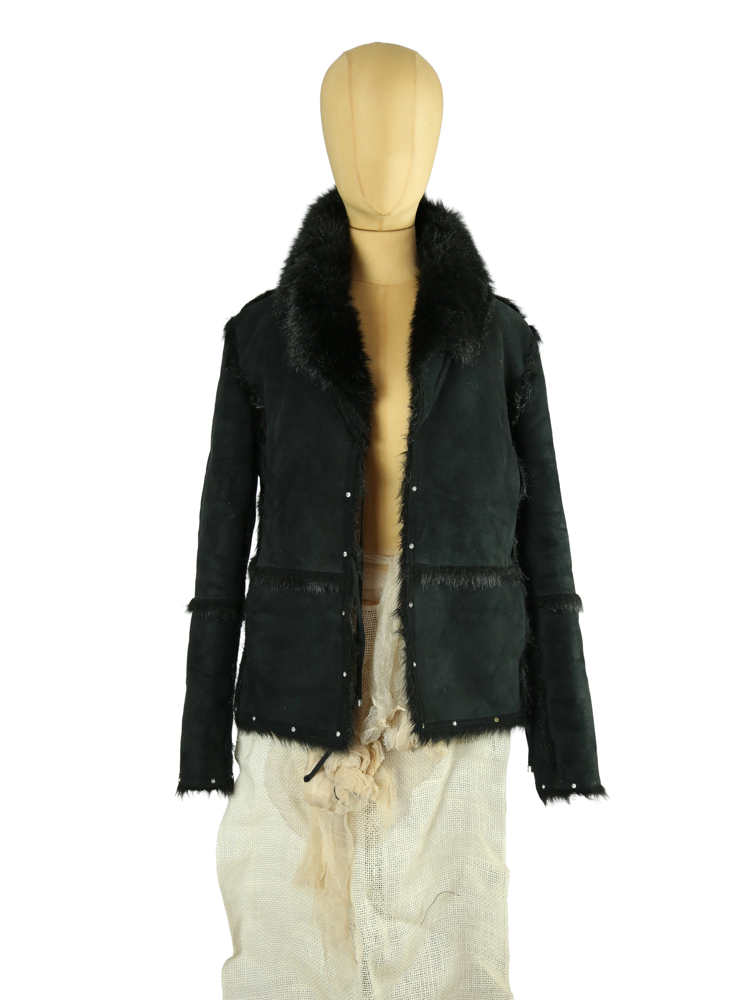

1 / 12Aus dem kuratierten Archiv von Disorder119. Kurz geschnittene Jacke von Balmain in tiefem Schwarz mit markanter, shearling-inspirierter Optik. Das Design kombiniert eine strukturierte Außenfläche mit kontrastierenden, fellähnlichen Abschlüssen entlang von Kragen, Kanten und Nähten. Die klare Linienführung wird durch dekorative Metallnieten entlang des Saums ergänzt und verleiht dem Piece einen kraftvollen, leicht rockigen Charakter. Der voluminöse Kragen rahmt den Oberkörper und sorgt für eine ausdrucksstarke Silhouette, während der körpernahe Schnitt die Taille subtil betont. Insgesamt ein typisches Balmain-Stück mit Fokus auf Präsenz, Struktur und Materialwirkung. Details: Marke: Balmain Farbe: Schwarz Größe: 40 Passform: Figurbetont Verschluss: Offen / Druckknöpfe Material: Polyester, Polyacryl Herstellungsland: nicht angegeben Fotografie & Passform: Das Kleidungsstück wurde auf unserer Standard-Schneiderpuppe fotografiert, die wir zur konsistenten Darstellung aller Kleidungsstücke verwenden. Maße der Schneiderpuppe: Brustumfang 89 cm Taillenumfang 66 cm Hüftumfang 89 cm Schulterbreite 38 cm Zustand: Gebraucht. Sichtbare Gebrauchsspuren und eine leichte Patina vorhanden. Die Oberfläche zeigt stellenweise altersbedingte Veränderungen und feine Tragespuren, die dem Material Tiefe und Charakter verleihen. Rechtliche Hinweise: Verkauf als gebrauchtes Kleidungsstück. Die Beschreibung erfolgt nach bestem Wissen und Gewissen. Farbnuancen und Oberflächenwirkungen können aufgrund von Lichtverhältnissen bei der Fotografie sowie unterschiedlicher Bildschirmdarstellungen leicht vom Original abweichen. Disorder119 steht für sorgfältig kuratierte Designerstücke mit Fokus auf Authentizität, Qualität und zeitlose Relevanz.
Shop-Kontakt noch nicht eingerichtet: WhatsApp-Nummer oder E-Mail-Adresse fehlen in SHOP_CONFIG (index.html).
Disorder119 · Kuratiertes Archiv für Designer-, Vintage- und Contemporary-Mode. Jedes Stück wird einzeln ausgewählt, fotografiert und beschrieben.